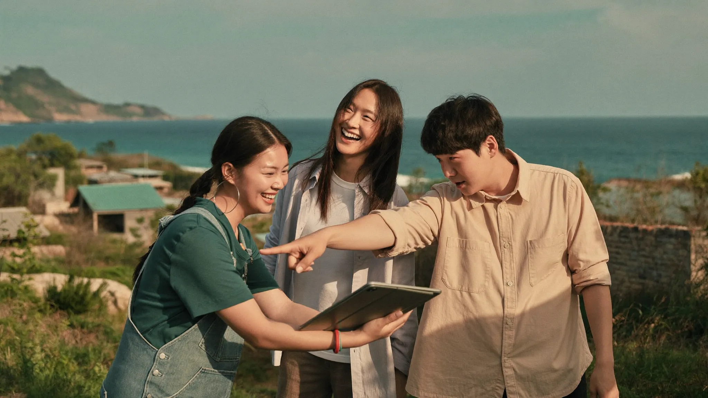

01
탐색 — 나에게 맞는 지역과 프로젝트
지역·분야·기간으로 공고를 탐색하고, 온보딩에서 만든 역량 프로필 기반의 매칭 적합도를 확인합니다.
지역 다이어그램매칭 적합도 %D-day 배지
아웃바운더는 도시 청년이 지역의 진짜 프로젝트에 참여하며 다음 커리어와 삶의 가능성을 발견하는 로컬 일경험 플랫폼입니다. 탐색부터 지원, 선발, 활동, 그 이후의 연결까지 — 한 곳에서.

견학형 프로그램이 아닌, 지역의 실제 문제를 함께 푸는 프로젝트를 설계합니다. 참여의 결과가 청년의 포트폴리오이자 지역의 자산이 되도록.
지역·기업·기관이 실제로 풀어야 하는 과업만 공고로 올라옵니다. 브랜딩, 콘텐츠, 리서치, 운영 — 실무 그 자체.
프로젝트마다 산출물이 정의되어 있습니다. 참여가 끝나면 포트폴리오가 한 편 완성됩니다.
활동 종료 후에도 재참여·취업·창업으로 이어지는 후속 연결을 추적하고 지원합니다.
지역·분야·기간으로 공고를 탐색하고, 온보딩에서 만든 역량 프로필 기반의 매칭 적합도를 확인합니다.
한 번 만든 프로필이 지원서에 자동으로 채워집니다. 다단계 폼과 인라인 검증으로 실수 없이, 5분 안에 제출.
선발 결과와 활동 일정을 마이페이지 여정 타임라인에서 확인합니다. 활동이 끝나면 만족도를 남깁니다.
참여 이후의 취업·창업·재참여를 추적합니다. 지역과 청년, 양쪽 모두에게 남는 성과로.
핀을 누르거나 지역 버튼을 선택하면 해당 지역의 모집 공고로 이동합니다.
공고별 마감일까지 온라인 지원. 프로필 자동 연동으로 5분이면 충분합니다.
마감 후 4일 이내 개별 안내. 마이페이지에서 실시간 상태 확인.
지역 파트너와의 30분 화상 인터뷰로 상호 기대치를 맞춥니다.
합격 확정 후 전담 코디네이터가 온보딩을 돕습니다.
이 데모는 청년용 서비스와 관리자 콘솔이 실제로 연결되어 있습니다. 청년 화면에서 지원하면, 관리자 화면의 지원자 목록에 나타납니다.